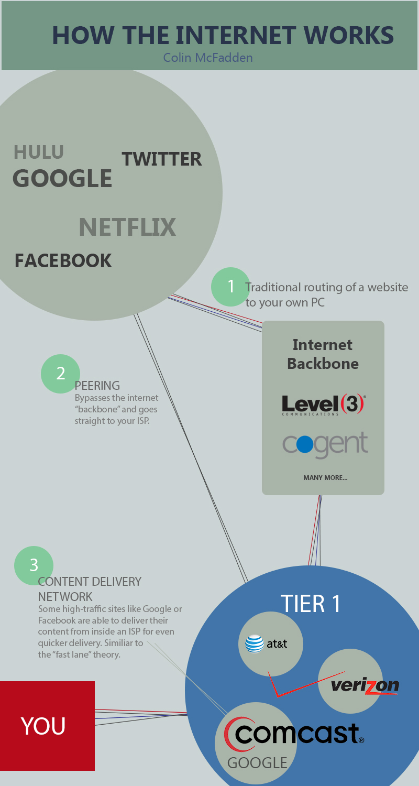

While a confusing and incredibly complex topic, net neutrality is an important topic as our technological capabilities grow. On this site, you can:
Learn how and where the internet comes from to gain a better understanding of the effect of net neutrality.
*Interesting note: The image above is a picture of the internet. The different colors represent data transfer from different countries.
Learn about the project by visiting OPTE.org

A political ad-style video
A somewhat exaggerated political ad targeted at the major Internet Service Provider CEO's and their heavy government influence. Don't allow them to control how we access content online!
Videos of opposing viewpoints from comedic news anchor John Oliver, the Wall Street Journal, and Mike Rugnetta of PBS.
American Enterprise Institute Scholar Bret Swanson explains why imposing 1930s-era telephone regulations on Internet broadband providers would be a historic mistake.
Cable companies are trying to create an unequal playing field for internet speeds, but they're doing it so boringly that most news outlets aren't covering it.
The views discussed in this episode do not necessarily reflect the views of PBS or its member stations. All thoughts and opinions presented are the province of Mike Rugnetta.
Vote whether your are for or against Net neutrality. Live results!
After reviewing the information on this site, let us know your stance on the issue. Net neutrality is a very complicated issue, so there are valid points at either end of the spectrum. We must consider is what is best for everyone when it comes to the internet, as it is our one medium of interaction and information sharing that allows everyone to be equal. Let us know what you think!